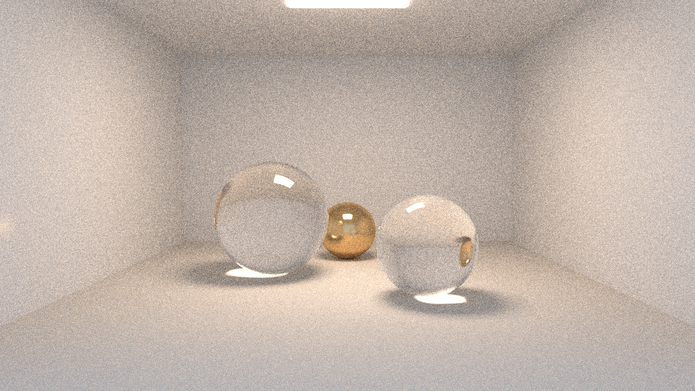
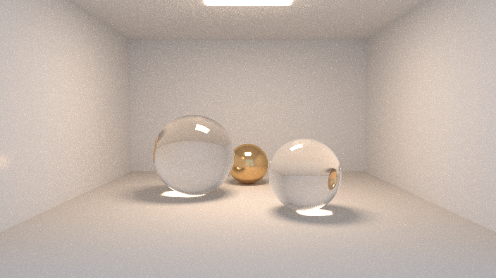
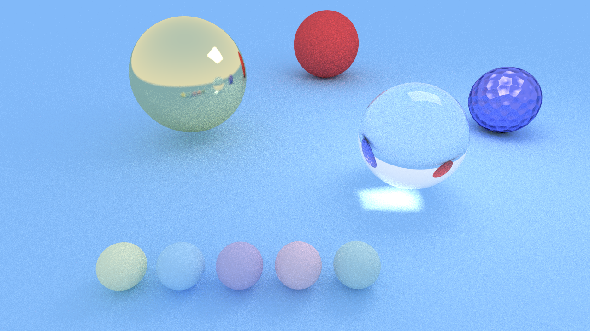
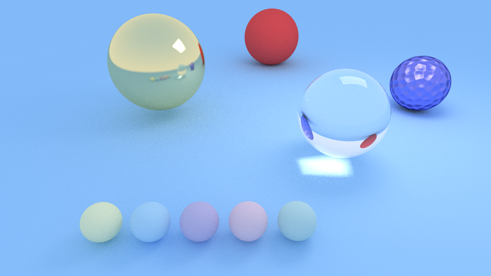

Multiple Importance Sampling (MIS)¶
RayON's path tracer originally used pure BSDF sampling: at each bounce the material chose a scattered direction and the path continued, hoping to eventually hit a light source by chance. For scenes with small, bright area lights this produces extreme variance — most paths never reach the light, and the rare paths that do are enormously bright, creating fireflies.
Multiple Importance Sampling solves this by combining two complementary sampling strategies and weighting each one by how well-suited it is to the situation.
Why two strategies?¶
| Strategy | What it samples | When it wins |
|---|---|---|
| BSDF sampling | Direction drawn from the material scatter distribution | Specular / mirror surfaces, smooth environment transitions |
| NEE (Next Event Estimation) | Direction toward a randomly chosen area light | Diffuse surfaces illuminated by small, bright lights |
Neither strategy dominates in all cases. MIS blends them so the final estimator has lower variance than either strategy alone, with no double-counting and no energy loss.
The rendering equation (brief recap)¶
At each surface point the outgoing radiance is:
A path tracer approximates this integral by Monte Carlo sampling. With pure BSDF sampling the single-bounce estimator is:
With MIS we instead compute two independent estimates — one via BSDF, one via NEE — and combine them with weights \(w_a\) and \(w_b\):
Both terms are unbiased; combining them reduces variance.
The power heuristic¶
The power heuristic (Veach & Guibas, 1995) is the standard MIS weighting function. With \(\beta = 2\) (the most common choice) it reduces to:
No powf() call is needed — squaring is sufficient and the formula is numerically stable even when one PDF approaches zero.
// mis_utils.hpp
inline double power_heuristic(double pdf_a, double pdf_b)
{
double a = pdf_a * pdf_a;
double b = pdf_b * pdf_b;
return (a + b > 0.0) ? (a / (a + b)) : 0.0;
}
Intuition: if the light PDF is much larger than the BSDF PDF for a given direction, NEE was the strategy that generated that sample most easily, so it gets most of the credit. If the BSDF PDF is much larger (e.g. a specular spike), the BSDF sample gets most of the credit.
Algorithm: iterative path tracer with MIS¶
The CPU ray_color() loop in cpu_ray_tracer.hpp implements the full MIS algorithm. Below is a commented walkthrough of one path:
for each bounce:
1. Trace current_ray → hit record (or sky)
2. EMISSIVE HIT — apply MIS weight
─────────────────────────────────
Le = rec.material.emitted()
if bounce == 0 or previous bounce was specular:
w = 1.0 ← full contribution (no prior NEE could have sampled this)
else:
light_pdf = lights.pdf_value(prev_origin, current_direction)
w = power_heuristic(prev_bsdf_pdf, light_pdf)
accumulated += throughput * Le * w
3. BSDF SCATTER — sample next direction
──────────────────────────────────────
srec = material.scatter_mis(ray, rec)
if !srec: break ← absorbed / terminal
4. NEE — direct light sampling (skip for delta BSDFs)
───────────────────────────────────────────────────
if not srec.is_specular and lights not empty:
direction = lights.random_direction(rec.p)
light_pdf = lights.pdf_value(rec.p, direction)
shadow_ray = Ray(rec.p + ε·n, direction)
if world.hit(shadow_ray) hits a LIGHT:
f = material.eval_bsdf(ray, rec, direction)
cos_θ = dot(direction, rec.normal)
p_mat = material.scatter_pdf(ray, rec, direction)
w_nee = power_heuristic(light_pdf, p_mat)
accumulated += throughput * f * Le_nee * cos_θ * w_nee / light_pdf
5. ADVANCE PATH
─────────────
if srec.is_specular:
throughput *= srec.bsdf_value
prev_bsdf_pdf = 1.0 ← delta: infinite PDF → weight = 1
prev_specular = true
else:
cos_θ = dot(scatter_dir, rec.normal)
throughput *= srec.bsdf_value * cos_θ / srec.pdf
prev_bsdf_pdf = srec.pdf
prev_specular = false
current_ray = srec.scattered
Key invariant
prev_bsdf_pdf tracks the PDF of the BSDF sampling decision that produced current_ray. When that ray hits an emissive surface at the next bounce, this stored PDF is used to compute the MIS weight (step 2), preventing double-counting with NEE.
Material interface changes¶
ScatterRecord¶
The scatter_mis() method returns a ScatterRecord instead of a simple (attenuation, ray) pair:
struct ScatterRecord
{
Ray scattered; // sampled outgoing ray
Color bsdf_value; // f(wo, wi) — NOT pre-divided by PDF
double pdf; // PDF of the sampled direction
bool is_specular; // true → delta BSDF, skip NEE entirely
};
The separate pdf field is essential for MIS: the throughput update bsdf_value * cos_θ / pdf can be computed explicitly, and pdf is re-used for the MIS weight at the next emissive hit.
Lambertian — full MIS support¶
Sampling uses Malley's method (uniform disk → hemisphere projection). Because \(f \cdot \cos\theta / p = (\rho/\pi) \cdot \cos\theta / (\cos\theta/\pi) = \rho\), the throughput simplifies to the albedo in the pure-BSDF path — exactly as before. The explicit form is only needed for NEE evaluation and MIS weights.
Other materials (Mirror, Glass, GGX, ThinFilm, ClearCoat)¶
These use the default scatter_mis() fallback which wraps the legacy scatter() and sets is_specular = true. They skip NEE and MIS weighting entirely — correct behaviour for delta or near-delta BSDFs.
Light sampling (NEE)¶
Area PDF → solid-angle PDF¶
NEE samples a point uniformly on the surface of a light and converts the area-measure PDF to a solid-angle-measure PDF:
where \(d\) is the distance from the shading point to the sampled point and \(\theta_L\) is the angle between the light normal and the direction toward the shading point.
Rectangle lights¶
- Sample \((u_1, u_2) \sim U[0,1]^2\) → \(P = \text{corner} + u_1\,\mathbf{u} + u_2\,\mathbf{v}\)
- Area \(= |\mathbf{u} \times \mathbf{v}|\)
- \(\displaystyle p_\Omega = \frac{d^2}{|\cos\theta_L| \cdot A}\)
Sphere lights (cone sampling)¶
Sphere lights subtend a cone of half-angle \(\theta_\text{max} = \arcsin(R / d)\) from the shading point. Sampling uniformly within this cone is more efficient than uniform surface sampling:
- \(\cos\theta_\text{max} = \sqrt{1 - R^2/d^2}\)
- \(\cos\theta \sim U[\cos\theta_\text{max},\, 1]\)
- Solid angle \(= 2\pi(1 - \cos\theta_\text{max})\)
- \(\displaystyle p_\Omega = \frac{1}{2\pi(1 - \cos\theta_\text{max})}\)
Mixture distribution over multiple lights¶
When a scene has \(N\) lights, RayON builds a cumulative area CDF over them. At each shading point one light is selected proportionally to its area, then a point is sampled on it. The combined solid-angle PDF is:
On the CPU, Hittable_list::pdf_value() averages over all lights (uniform selection); random_direction() picks one light uniformly at random. On the GPU, the area CDF stored in scene.light_cdfs[] provides area-proportional selection.
GPU implementation¶
Light tracking in CudaScene::Scene¶
struct Scene {
// … existing fields …
int *light_indices; // indices into geometries[] for LIGHT materials
int num_lights;
float *light_cdfs; // cumulative area CDF [num_lights + 1]
};
These arrays are populated at scene build time in scene_builder_cuda.cu by scanning all geometry for MaterialType::LIGHT.
Shadow ray: hit_scene_shadow()¶
An early-exit BVH traversal that returns true as soon as any geometry occludes the path. Stack depth is capped at 16 (shadow rays rarely need deep traversal). This avoids the full closest-hit bookkeeping of hit_scene(), making shadow tests ~40–60 % cheaper.
BSDF evaluation and PDF¶
Currently implemented for Lambertian only (all other materials are treated as delta via is_delta_material()):
__device__ f3 eval_bsdf_gpu(const hit_record_simple &rec, const f3 &wi)
{
if (rec.material == LAMBERTIAN)
return rec.color / M_PI;
return f3(0);
}
__device__ float scatter_pdf_gpu(const hit_record_simple &rec, const f3 &wi)
{
if (rec.material == LAMBERTIAN)
return max(0.f, dot(wi, rec.normal)) / M_PI;
return 0.0f;
}
MIS weight for emissive hits¶
When the BSDF-sampled path hits a LIGHT surface at bounce \(b > 0\), the MIS weight requires the solid-angle PDF that NEE would have assigned to the same direction from the previous hit point. This is computed by light_dir_pdf_gpu(), which looks up the geometry in the light list and evaluates the appropriate solid-angle PDF (rectangle or sphere).
Expected variance reduction¶
| Scene type | Typical variance reduction | Equivalent sample reduction |
|---|---|---|
| Interior, small area lights | Very high | 10–50× |
| Mixed diffuse + specular | High | 5–20× |
| Outdoor with HDR (diffuse) | Moderate | 2–3× |
| Pure mirror / glass | None (MIS skipped) | 0× |
Performance cost¶
NEE adds one shadow ray per non-specular bounce. Shadow rays cost roughly 40–60 % of a full hit_scene() call (early-exit BVH). For a typical 8-bounce path with 2 diffuse bounces, the total ray count increases by ~25–40 %.
Break-even point
At 10× variance reduction, the same noise level is achieved with 10× fewer samples. Paying 40 % more per sample still yields a ~7× wall-clock speedup.
Verification¶
-
Furnace test — place a diffuse sphere inside a uniformly emitting sphere (albedo 1.0). The result must be flat white; any colour bias indicates an energy leak in the MIS weights.
-
Light count at startup — both backends print detected lights:
-
CPU / GPU consistency — render a scene with both backends at high sample counts. Mean pixel values should agree to within statistical noise.
-
Variance comparison — render a Cornell-box-style scene at 64 spp with and without MIS. The MIS image should show dramatically lower noise around shadow edges and on diffuse surfaces facing the light.
Visual comparison¶
The renders below isolate the effect of enabling MIS while keeping the Sobol' sampler fixed — so all noise differences come from Next-Event Estimation alone. Drag the slider to compare.
Caustics chapel (512 SPP)¶


Left: MIS off | Right: MIS on — Sobol' sampler, 512 SPP. MIS eliminates the firefly hot-spots and resolves the diffuse wall illumination correctly.
Default scene — area light only (64 SPP)¶


Left: MIS off | Right: MIS on — Sobol' sampler, 64 SPP. Shadow edges, the lit side of the coloured spheres, and the rough-mirror highlight all resolve cleanly with NEE.
See the full comparison
Four scenes across all configurations are on the Visual Comparisons page.
References¶
- Veach, E. & Guibas, L. (1995). Optimally Combining Sampling Techniques for Monte Carlo Rendering. SIGGRAPH '95.
- Pharr, M., Jakob, W. & Humphreys, G. Physically Based Rendering: From Theory to Implementation, 4th ed. §13.4 (MIS), §12.2 (area lights).
- Shirley, P. Ray Tracing: The Rest of Your Life. §7 (mixture PDFs), §8 (light sampling).